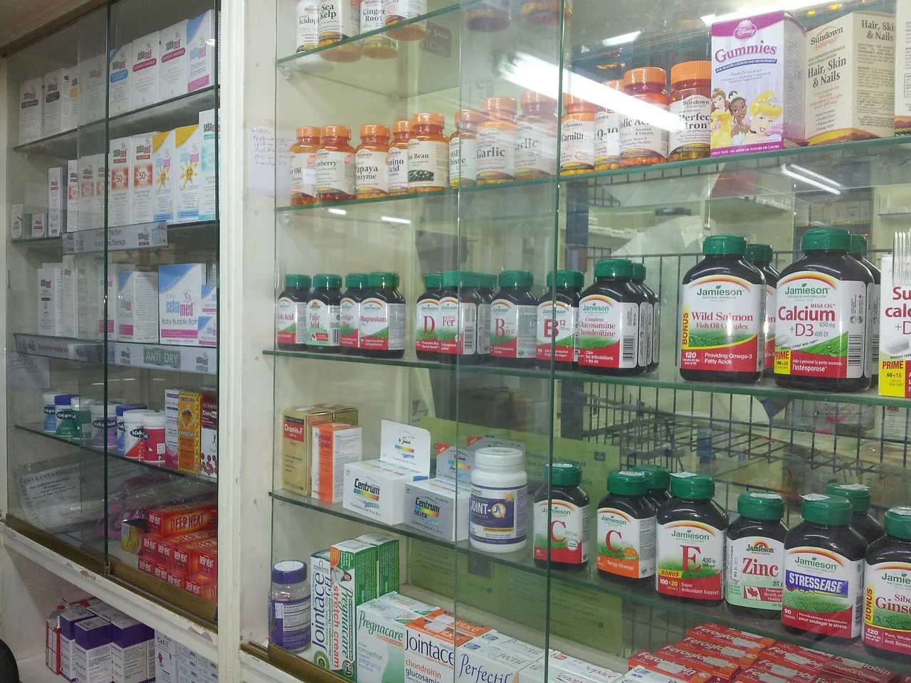

Medicine & pharmaceuticals
Development and evaluation of pharmaceutical concepts, new dosage forms and indication-related active-ingredient combinations.
Services
DOK ROK brings together medical perspective, life-science analysis, product thinking and quality structures in an integrated service portfolio.
Development and evaluation of pharmaceutical concepts, new dosage forms and indication-related active-ingredient combinations.
Innovative medical-device and application concepts with attention to evidence, safety, usability and clinical relevance.
Product and ingredient concepts informed by current biomedical knowledge, with particular attention to dosage, quality and interactions.
Consulting, planning, validation, evaluation, SOPs and structured quality systems for healthcare and life-science environments.
Scientifically grounded training and educational concepts in human medicine, life sciences, prevention and health communication.
From hypothesis and study design to scientific communication and international project coordination.
How we work
Every project begins with a clear medical or scientific question. From there, a structured path leads from analysis to responsible application.
Define the indication, audience, scientific context and risks precisely.
Assess evidence, ingredients, mechanisms, quality and regulatory context.
Design the concept, dosage form, processes, documentation and communication logic.
Turn insight into comprehensible, safe and practically useful solutions.
What we do not do
We do not replace individual medical diagnosis or treatment and do not promise universal effects. Scientific integrity, transparent limitations and responsible communication are part of our work.

Talk to us about research, product concepts, quality or medical-scientific projects.